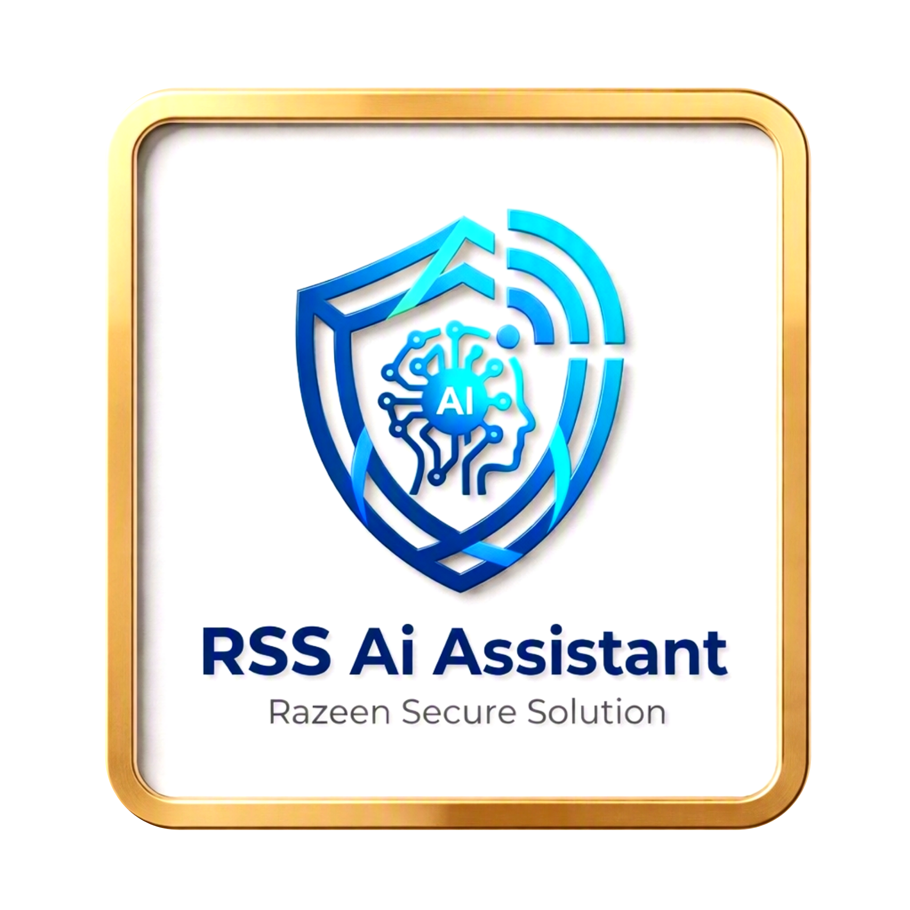
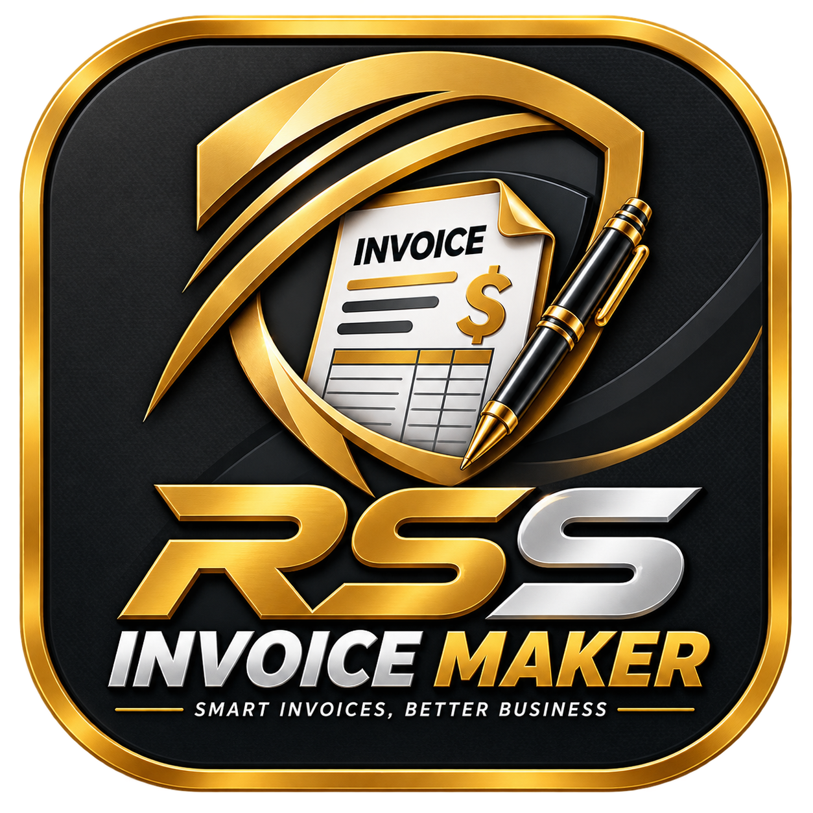
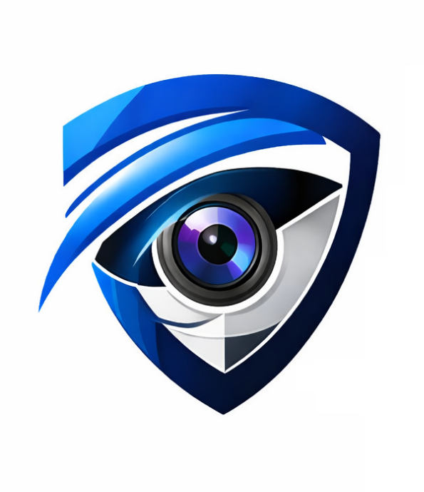

⌘
Software & Apps
Native mobile and digital products built around useful workflows, clean interfaces and maintainability.
View projects →Practical software, AI, cloud infrastructure, CCTV security, networking and IT solutions — engineered as one dependable RSS ecosystem.
From a native mobile product to a complete surveillance deployment, RSS combines engineering with real-world technology.
Native mobile and digital products built around useful workflows, clean interfaces and maintainability.
View projects →Backup, synchronization and connected services designed for reliable access and data workflows.
Explore Cloud Sync →CCTV installation, surveillance planning and practical security technology for homes and businesses.
Discuss security →Network infrastructure, system administration and technology support for dependable operations.
Get support →Every project gets its own identity, progress, status and detailed project page.
Cloud synchronization and backup infrastructure for connected devices and services.

02An intelligent assistant experience focused on productivity and useful RSS services.

03A straightforward invoicing tool designed for practical business workflows.
A clean personal finance workflow for organizing income, expenses and money records.

05+Additional RSS products and technology projects will join the ecosystem as they move into planning.
A complete timeline of the RSS project portfolio — including projects that do not yet have individual detail pages.
Secure cloud file synchronization.
Cloud & SyncAI-powered productivity assistant.
Artificial IntelligenceProfessional invoice generation tool.
Business ToolsPersonal finance and expense tracking.
Personal FinanceShop and inventory management system.
Business ManagementSchool administration and student management.
Education ManagementWeb-based image downloading.
Web UtilityClipboard management with secure storage, organization and backup workflows.
Productivity UtilitySocial media sharing automation.
Social AutomationAI-powered project management.
AI & Project ManagementApplication launcher.
System UtilityDevice monitoring and protection.
Device SecurityWhatsApp business automation built around the RSS automation ecosystem.
Messaging AutomationRazeen Secure Solution has operated since 2015, combining software development with security infrastructure, networking and system administration.
Software, cloud, AI, CCTV, networking or IT support — tell RSS what you need.